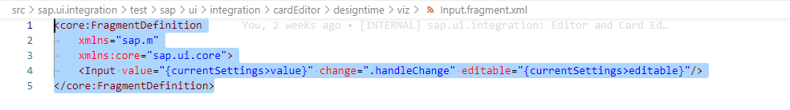

Custom the Field
Custom the field(parameter) to use other UI5 controls following below 2 ways:
Extends class sap.ui.integration.editor.fields.viz.VizBase
VizBase is the base class of ColorSelect, ShapeSelect, IconSelect and ImageSelect supplied by Editor. Eextends it to use the UI5 Control.
- Extends class VizBase
sap.ui.define([ "sap/ui/integration/editor/fields/viz/VizBase", "sap/m/DateRangeSelection", "sap/base/util/merge" ], function ( VizBase, DateRangeSelection, merge ) { "use strict"; var CustomDateRangeSelection = VizBase.extend("sap.ui5.test.cardeditor.listcard.viz.CustomDateRangeSelection", { metadata: { library: "sap.ui5.test.cardeditor.listcard", properties: { displayFormat: { type: "string", defaultValue: "" } } }, renderer: { apiVersion: 2 } }); return CustomDateRangeSelection; });VizBase has 2 default properties: "value" and "editable". Customer can add new properties, here is "dispalyFormat".
- Implement the onInit function
// create this._oControl and set up it CustomDateRangeSelection.prototype.onInit = function () { this._oControl = new DateRangeSelection(); };In the onInit function, set this._oControl to the UI5 control.
- Add the set function of new properties
CustomDateRangeSelection.prototype.setDisplayFormat = function (sValue) { this.setProperty("displayFormat", sValue, true); sValue = this.getDisplayFormat(); this._oControl.setProperty("displayFormat", sValue); return this; }; - Bind the properties to the UI5 control
// bind propeties to this._oControl CustomDateRangeSelection.prototype.bindPropertyToControl = function (sProperty, oBindingInfo) { VizBase.prototype.bindPropertyToControl.apply(this, arguments); if (sProperty === "displayFormat") { var oControlBindingInfo = merge({}, oBindingInfo); this._oControl.bindProperty("displayFormat", oControlBindingInfo); } };If customer want to bind value or editable to other property of the UI5 control, please not call the bindPropertyToControl of VizBase.
ShapeSelect.prototype.bindPropertyToControl = function (sProperty, oBindingInfo) { if (sProperty === "editable") { var oControlBindingInfo = merge({}, oBindingInfo); this._oControl.bindProperty("enabled", oControlBindingInfo); } if (sProperty === "value") { var oControlBindingInfo = merge({}, oBindingInfo); this._oControl.bindProperty("selectedKey", oControlBindingInfo); } }; - Use the new class as visualization type of the property in Configuration
"dateRange": { "manifestpath": "/sap.card/configuration/parameters/dateRange/value", "type": "string", "label": "Date Range", "displayFormat": "yyyy/MM/dd", "visualization": { "type": "sap/ui5/test/cardeditor/listcard/viz/CustomDateRangeSelection", "settings": { "value": "{currentSettings>value}", "editable": "{currentSettings>editable}", "displayFormat": "{currentSettings>displayFormat}" } } },
Create fragment xml and controller files
Another way to implement this is using fragment.
- Create fragment xml view file

Use the UI5 Controls in the xml file, and the data models: "currentSettings", "items", "i18n", "context", "contextflat" and undefined.
- Create controller.js File which extends sap.ui.integration.editor.fields.fragment.Controller
sap.ui.define([ "sap/ui/integration/editor/fields/fragment/Controller" ], function(Controller) { "use strict"; var InputController = Controller.extend("sap.ui5.test.cardeditor.listcard.viz.Input", { }); return InputController; }); - Implement the init function and the event handlers
InputController.prototype.init = function () { this._aa = "aa"; }; InputController.prototype.handleChange = function (oEvent) { //add current change into translation texts var oControl = oEvent.getSource(); var sValue = oControl.getValue(); this.saveValue(sValue); };In the init function, please define the needed properties.
In the event handlers, if want to save the value, please call the saveValue function
- Use the fragment as visualization.fragment in Configuration
"cardTitle": { "manifestpath": "/sap.card/configuration/parameters/cardTitle/value", "type": "string", "translatable": true, "required": true, "label": "Card Title", "allowDynamicValues": true, "editableToUser": false, "visibleToUser": true, "description": "Card Title", "cols": 1, "visualization": { "fragment": "sap/ui5/test/cardeditor/listcard/viz/Input" } }